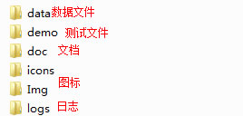
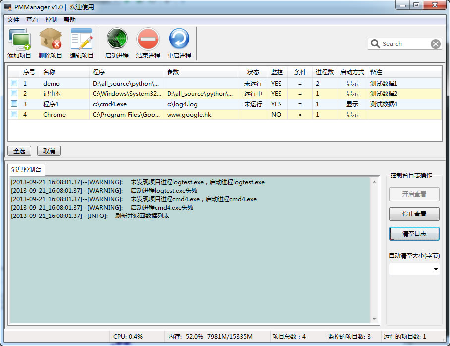
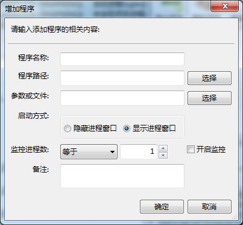
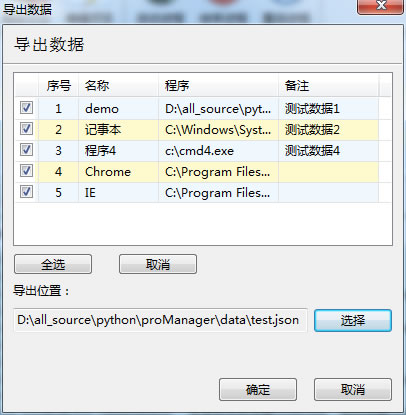
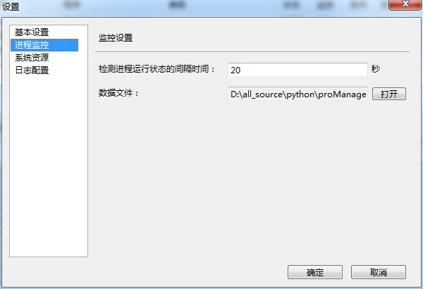
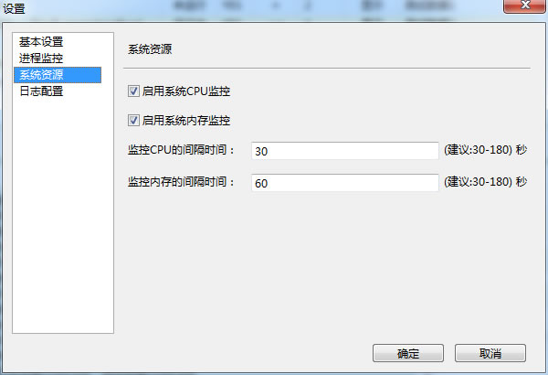
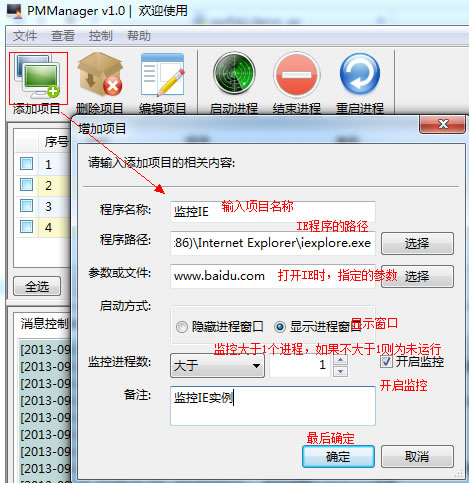
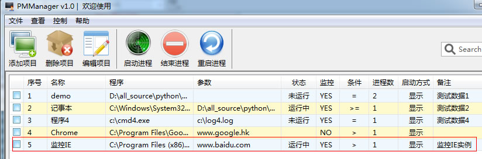

版本： PMManager v1.0
一、程序基本结构
打开PMManager 文本夹，

一、基本使用
1.主界面

2.添加项目
通过菜单，文件--->添加项目，或者直接工具栏，添加项目

选项说明：
程序名称：输入添加项目的名称，不能留空
程序路径：输入运行程序的路径，路径必须有效，不能为空
参数或文件：运行程序的参数，如果没有可以不填
启动方式：
隐藏进程窗口，也就是运行的程序不会显示窗口界面，但它是运行的。可以用任务管理器查看到进程。
相反，就是显示窗口。（注意，运行中的程序是不可以更改启动方式的，只有关闭进程后才能更改）
监控进程数：条件有"等于"、"小于"、"大于"、"大于或等于"、"小于或等于"、"不等于"，进程数可以自己选择。
例如：我们需要监控的程序，它在运行时只有两个进程，那么就填"等于"2。
像Chrome 浏览器，打开后会有很多个进程，可以填"大于"2.
开启监控：是否开启监控(可有开启监控，主窗口列表上的"状态"才会显示"运行中"或"未运行"，未开启的话就为空)
备注：可以随意填写自己的一些说明内容
3.编辑项目
选中主窗口的项目，然后 "菜单栏" 或 "工具栏"--->"编辑项目"。
或者直接双击项目，进入编辑状态
4.删除项目
选中主窗口需要删除的项目，然后 "菜单栏" 或 "工具栏"--->"删除项目"
5.数据导出
"菜单栏"--->"导出数据" ---> 出现对话框，选择需要导出的项目，选择导出文件的位置，"确定"即可。

6.数据导入
"菜单栏"---> "导入数据" --->选择导入的文件，确定即可。
二、设置
"菜单栏"--->"设置"
1.基本配置
未使用
2.进程监控
检测进程运行状态的间隔时间：也就是相隔多少时间，对进程的运行状态进行一次检测，来判断进程是否被导常关闭。
一般设置10-60秒之间。
数据文件：保存所有项目数据的文件。

3.系统资源
在"状态栏"上显示 CPU、内存的监控信息。
(注意：启用或关闭CPU和内存在状态栏上显示的生效时间，是上一次设定它们间隔时间，
例如，上一次设定CPU监控间隔时间是180秒，那要等刚好过3分钟后才会生效）

4.日志配置
1）如果要"启用控制台信息输出" 必须 "启用文件日志输出"
2）日志文件可以设定保存多少份，大小超过多少M做一次轮循。
3）信息控制台，可以指定超过多少字节做一次清屏。
4）这里的日志级别分别有5项，他们从高到低的关系为：critical > error > warning > info > debug 。
低于指定级别的日志消息将会被忽略。
例如，选择 "info" 级别后，因为 debug 比 info 的级别低，所以debug 级别的日志都不会显示。高于
info 的 waring、error、critical 级别都会显示。
三、使用实例
添加一个监控程序：


如果要批量添加多个监控项目，可以使用notepad++，以json 格式打开数据文件进行编辑，
不过要注意不要输错，否则程序可能不能运行。